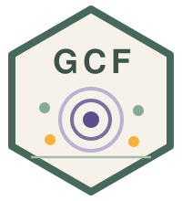
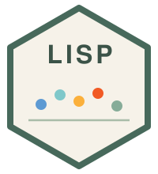

Online calculators
Open-source calculators for six spatial methods. Load the built-in example or upload your own CSV, set the parameters, and download the tables and figures.

GCF calculator Generalized covariate field Open → OPGD calculator
Optimal parameters-based geographical detector
Open →
OPGD calculator
Optimal parameters-based geographical detector
Open →
 GC calculator
Geocomplexity
Open →
GC calculator
Geocomplexity
Open →

LISP calculator Local indicator of stratified power Open → DSI calculator Degree of spatial interpretability Open → GOS calculator
Geographically optimal similarity
Open →
GOS calculator
Geographically optimal similarity
Open →
All calculators run entirely in your browser (R compiled to WebAssembly via Shinylive/webR): nothing is uploaded, and no data leave your computer. The first visit downloads about 65 MB of runtime plus the packages an app needs; it can take a minute on a slow connection. The R packages behind the methods are listed on the Methods page.